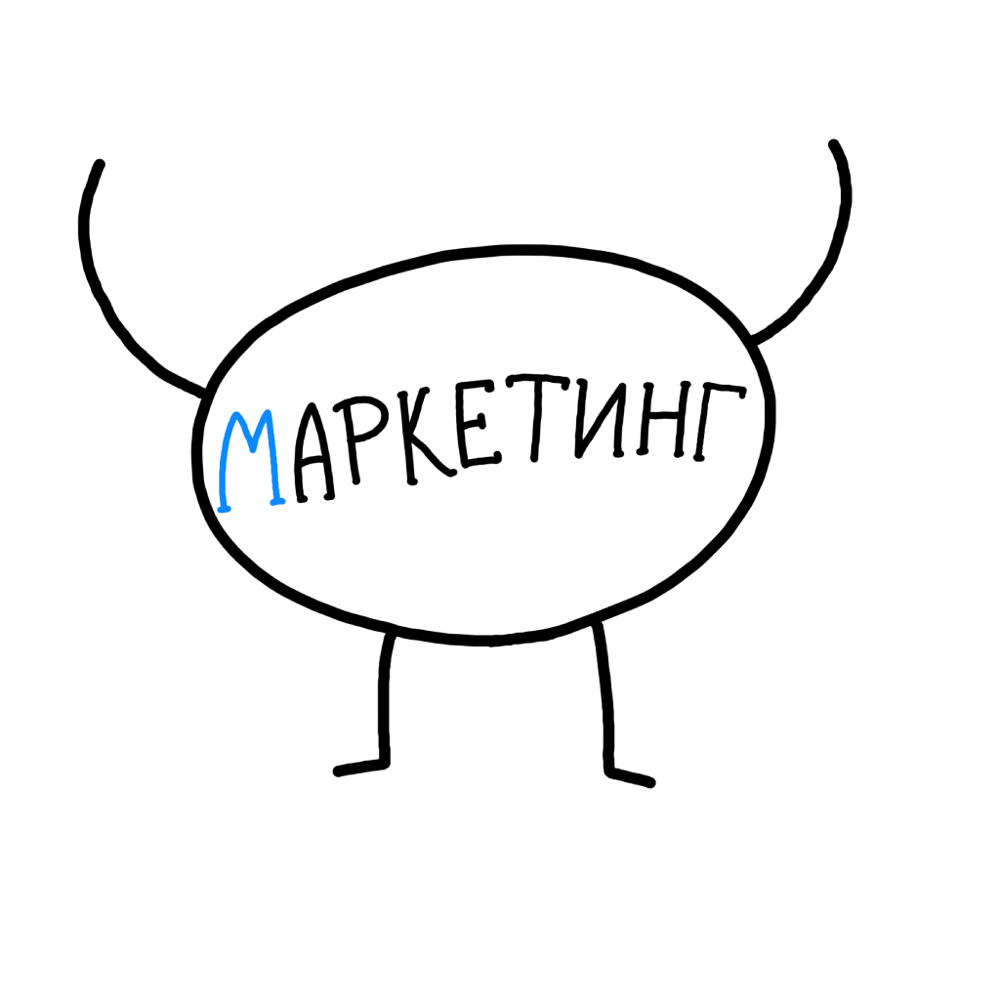
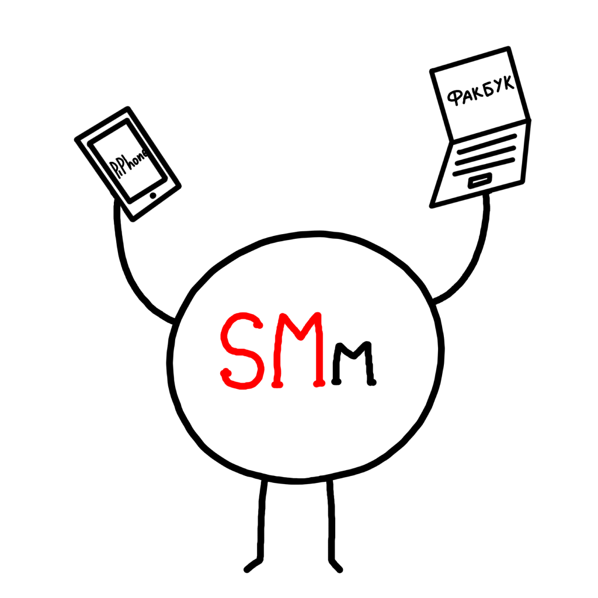
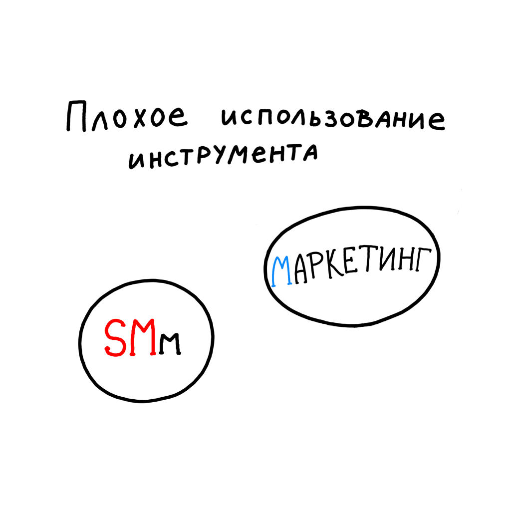

НЕЙМИНГ
Открой профессию с новой стороны
В нашей профессии существует 2 персонажа
Есть бизнес и у него существует маркетинговая стратегия, куда он вкладывает силы, деньги, время. Маркетинг приносит бизнесу клиентов, ресурсы, репутацию и узнаваемость.
И вот бизнес хочет расширить поток клиентов и количество трафика. Он берет и зовет SMm. (Слова social media - тут главные)
- 1. Собрать в аккаунте много подписчиков
- 2. Сделать так чтобы они ставили лайки и были вовлечены
- 3. Увеличить просмотры в историях
- 4. Все это завернуть с красивыми картинками в

Но идет время, продажи и прочие важные показатели бизнеса практически не меняться. Основные средства продолжают инвестировать в основной маркетинг, а SMm воспринимают как некую "Игрушку"
Арсенал инструментов и знаний который есть у змм не позволяет ему зайти в союз с маркетингом. Они идут раздельно и их цели практически никак не пересекаются.
В конечном итоге ЗМм не так полезен бизнесу, в него инвестирует меньше денег и прочих средств и после первого косяка сразу от него уходят.
